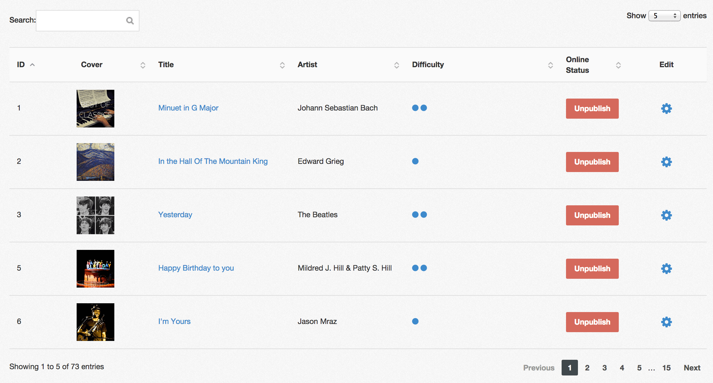

ReactiveDatables
Provides a meteor.js way of using jquery.dataTables with reactively-updating data, instant search, state saving / pagination etc.

Installation
meteor add ephemer:reactive-datatables
Usage
In your template:
<template name="containsTheDataTable">
{{> ReactiveDatatable tableData=reactiveDataFunction options=optionsObject }}
</template>
Important: Due to the way Blaze interprets parameters upon calling a template, reactiveDataFunction should return a function that returns a cursor, not return a cursor itself. I'm sure there's a cleverer way to do this, but it works for now:
dataTableData = function () {
return Meteor.users.find();
};
Template.containsTheDataTable.helpers({
reactiveDataFunction: function () {
return dataTableData;
},
optionsObject: optionsObject // see below
});
Set up your datatable's options as per the jquery.dataTables API, e.g.:
var optionsObject = {
columns: [{
title: 'Real Name',
data: 'profile.realname', // note: access nested data like this
className: 'nameColumn'
}, {
title: 'Photo',
data: 'profile.picture',
render: renderPhoto, // optional data transform, see below
className: 'imageColumn'
}],
// ... see jquery.dataTables docs for more
}
function renderPhoto(cellData, renderType, currentRow) {
// You can return html strings, change sort order etc. here
// Again, see jquery.dataTables docs
var img = "<img src='" + cellData + "' title='" + currentRow.profile.realname + "'>"
return img;
}
I've deliberately kept this package as close as possible to the original API. I've also deliberately not exposed any global variables, although you can access the DataTable API in the usual jquery way using the '#datatable' selector from your template, i.e., to get an array with your data:
$('#datatable').DataTable().rows()
Acknowledgements
Thank you to @smowden for finding the key to getting this whole package off the ground: $('#datatable').DataTable().clear().rows.add(data).draw()